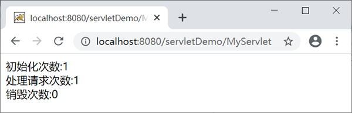
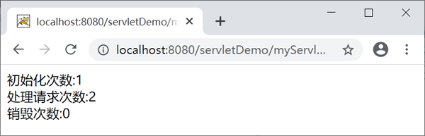
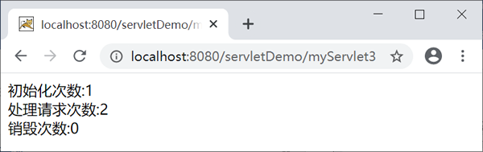

Servlet虚拟路径映射
客户端通过 URL 地址来访问 Web 服务器中的资源，Servlet 程序若想被外界访问，就必须被映射到一个 URL 地址上。很多时候，该 URL 地址和 Servlet 程序的物理路径（在硬盘上的存储位置）并不一致，因此它被称为虚拟路径。Servlet 与虚拟路径的对应关系就叫做 Servlet 虚拟路径映射。
Servlet 虚拟路径映射可以被分为 2 类：
下面介绍如何实现单一映射和多重映射。
Servlet 单一映射的实现方式有 2 种：
也可以使用 urlPatterns 属性实现 Servlet 单一映射，代码如下。
Servlet 多重映射的实现方式有 3 种：
以 serveltDemo 为例，在 web.xml 中配置两个 <servlet-mapping> 元素，代码如下所示。
启动 Tomcat 服务器，在地址栏中输入“http://localhost:8080/servletDemo/myServlet”，访问 MyServlet，结果如下图。
在地址栏中输入“http://localhost:8080/servletDemo/myServlet2”，也可以访问 MyServlet，结果如下图。
以 servletDemo 为例，<servlet-mapping> 元素下添加两个 <url-pattern> 子元素，代码如下。
启动 Tomcat 服务器，在地址栏中输入“http://localhost:8080/servletDemo/myServlet”，访问 MyServlet，结果如下图。

在地址栏中输入“http://localhost:8080/servletDemo/myServlet3”，也可以访问 MyServlet，结果如下图。
以 servletDemo 为例，在 @WebServlet 注解的 urlPatterns 属性中添加一组虚拟路径，代码如下。
启动 Tomcat 服务器，在地址栏中输入“http://localhost:8080/servletDemo/myServlet”，访问 MyServlet，结果如下图。
在地址栏中输入“http://localhost:8080/servletDemo/myServlet4”，也可以访问 MyServlet，结果如下图。
Servlet 虚拟路径映射可以被分为 2 类：
- 单一映射
- 多重映射
下面介绍如何实现单一映射和多重映射。
Servlet 单一映射
Servelt 单一映射是指一个 Servlet 只被映射到一个虚拟路径上。Servlet 单一映射的实现方式有 2 种：
- 使用 web.xml 实现单一映射；
- 使用 @WebServlet 实现单一映射。
1. web.xml 实现单一映射
在 web.xml 文件中，使用 <servlet> 和 <servlet-mapping> 元素实现 Servlet 单一映射，代码如下。
<?xml version="1.0" encoding="UTF-8"?>
<web-app xmlns:xsi="http://www.w3.org/2001/XMLSchema-instance"
xmlns="http://xmlns.jcp.org/xml/ns/javaee"
xsi:schemaLocation="http://xmlns.jcp.org/xml/ns/javaee http://xmlns.jcp.org/xml/ns/javaee/web-app_4_0.xsd"
id="WebApp_ID" metadata-complete="false" version="4.0">
<servlet>
<servlet-name>MyServlet</servlet-name>
<servlet-class>net.biancheng.www.MyServlet</servlet-class>
</servlet>
<servlet-mapping>
<servlet-name>MyServlet</servlet-name>
<url-pattern>/myServlet</url-pattern>
</servlet-mapping>
</web-app>
对以上标签说明如下：
- <servlet> 元素用于注册 Servlet，即给 Servlet 起一个独一无二的名字。
- <servlet> 包含两个主要的子元素 <servlet-name> 和 <servlet-class>，分别用于指定 Servlet 的名称和 Servlet 的完整限定名（包名+类名）。
- <servlet-mapping> 元素用于定义 Servlet 与虚拟路径之间的映射。
- <servlet-mapping> 包含两个子元素 <servlet-name> 和 <url-pattern>，分别用于指定 Servlet 的名称和虚拟路径。
2. @WebServlet 实现单一映射
在 @WebServlet 注解中，一般使用 value 属性实现 Servlet 单一映射，代码如下。
package net.biancheng.www;
import java.io.IOException;
import javax.servlet.ServletException;
import javax.servlet.annotation.WebServlet;
import javax.servlet.http.HttpServlet;
import javax.servlet.http.HttpServletRequest;
import javax.servlet.http.HttpServletResponse;
@WebServlet("/MyServlet")
public class MyServlet extends HttpServlet {
private static final long serialVersionUID = 1L;
public void doGet(HttpServletRequest req, HttpServletResponse resp) throws ServletException, IOException {
}
protected void doPost(HttpServletRequest req, HttpServletResponse resp) throws ServletException, IOException {
doGet(req, resp);
}
}
也可以使用 urlPatterns 属性实现 Servlet 单一映射，代码如下。
package net.biancheng.www;
import java.io.IOException;
import javax.servlet.ServletException;
import javax.servlet.annotation.WebServlet;
import javax.servlet.http.HttpServlet;
import javax.servlet.http.HttpServletRequest;
import javax.servlet.http.HttpServletResponse;
@WebServlet(urlPatterns = "/myServlet")
public class MyServlet extends HttpServlet {
private static final long serialVersionUID = 1L;
public void doGet(HttpServletRequest req, HttpServletResponse resp) throws ServletException, IOException {
}
protected void doPost(HttpServletRequest req, HttpServletResponse resp) throws ServletException, IOException {
doGet(req, resp);
}
}
Servlet 多重映射
Servlet 的多重映射是指一个 Servlet 可以被映射到多个虚拟路径上。此时，客户端可以通过多个路径实现对同一个 Servlet 的访问。Servlet 多重映射的实现方式有 3 种：
- 配置多个 <servlet-mapping> 元素。
- 配置多个 <url-pattern> 子元素。
- 在 @WebServlet 的 urlPatterns 属性中使用字符串数组
1. 配置多个 <servlet-mapping> 元素
Servlet 2.5 规范之前，<servlet-mapping> 元素只允许包含一个 <url-pattern> 子元素，若要实现 Servet 的多重映射，只能通过配置多个 <servlet-mapping> 元素实现。以 serveltDemo 为例，在 web.xml 中配置两个 <servlet-mapping> 元素，代码如下所示。
<?xml version="1.0" encoding="UTF-8"?>
<web-app xmlns:xsi="http://www.w3.org/2001/XMLSchema-instance"
xmlns="http://xmlns.jcp.org/xml/ns/javaee"
xsi:schemaLocation="http://xmlns.jcp.org/xml/ns/javaee http://xmlns.jcp.org/xml/ns/javaee/web-app_4_0.xsd"
id="WebApp_ID" metadata-complete="false" version="4.0">
<servlet>
<servlet-name>MyServlet</servlet-name>
<servlet-class>net.biancheng.www.MyServlet</servlet-class>
<load-on-startup>1</load-on-startup>
</servlet>
<servlet-mapping>
<servlet-name>MyServlet</servlet-name>
<url-pattern>/myServlet</url-pattern>
</servlet-mapping>
<servlet-mapping>
<servlet-name>MyServlet</servlet-name>
<url-pattern>/myServlet2</url-pattern>
</servlet-mapping>
</web-app>
启动 Tomcat 服务器，在地址栏中输入“http://localhost:8080/servletDemo/myServlet”，访问 MyServlet，结果如下图。

在地址栏中输入“http://localhost:8080/servletDemo/myServlet2”，也可以访问 MyServlet，结果如下图。

2. 配置多个 <url-pattern> 子元素
从 Servlet 2.5 开始，<servlet-mapping> 元素可以包含多个 <url-pattern> 子元素，每个 <url-pattern> 代表一个虚拟路径的映射规则。因此，通过在一个 <servlet-mapping> 元素中配置多个 <url-pattern> 子元素，也可以实现 Servlet 的多重映射。以 servletDemo 为例，<servlet-mapping> 元素下添加两个 <url-pattern> 子元素，代码如下。
<?xml version="1.0" encoding="UTF-8"?>
<web-app xmlns:xsi="http://www.w3.org/2001/XMLSchema-instance"
xmlns="http://xmlns.jcp.org/xml/ns/javaee"
xsi:schemaLocation="http://xmlns.jcp.org/xml/ns/javaee http://xmlns.jcp.org/xml/ns/javaee/web-app_4_0.xsd"
id="WebApp_ID" metadata-complete="false" version="4.0">
<servlet>
<servlet-name>MyServlet</servlet-name>
<servlet-class>net.biancheng.www.MyServlet</servlet-class>
<load-on-startup>1</load-on-startup>
</servlet>
<servlet-mapping>
<servlet-name>MyServlet</servlet-name>
<url-pattern>/myServlet</url-pattern>
<url-pattern>/myServlet3</url-pattern>
</servlet-mapping>
</web-app>
启动 Tomcat 服务器，在地址栏中输入“http://localhost:8080/servletDemo/myServlet”，访问 MyServlet，结果如下图。
在地址栏中输入“http://localhost:8080/servletDemo/myServlet3”，也可以访问 MyServlet，结果如下图。

3. @WebServlet 实现多重映射
Servlet 3.0 增加了对 @WebServlet 注解的支持，我们可以在 urlPatterns 属性中，以字符串数组的形式指定一组映射规则来实现 Servlet 的多重映射。以 servletDemo 为例，在 @WebServlet 注解的 urlPatterns 属性中添加一组虚拟路径，代码如下。
package net.biancheng.www;
import java.io.IOException;
import java.io.PrintWriter;
import javax.servlet.ServletException;
import javax.servlet.annotation.WebInitParam;
import javax.servlet.annotation.WebServlet;
import javax.servlet.http.HttpServlet;
import javax.servlet.http.HttpServletRequest;
import javax.servlet.http.HttpServletResponse;
@WebServlet(
urlPatterns = { "/myServlet", "/myServlet4" })
public class MyServlet extends HttpServlet {
private static final long serialVersionUID = 1L;
private int initCount = 0;
private int httpCount = 0;
private int destoryCount = 0;
@Override
public void destroy() {
destoryCount++;
super.destroy();
// 向控制台输出destory方法被调用次数
System.out.println(
"**********************************destroy方法：" + destoryCount + "*******************************");
}
@Override
public void init() throws ServletException {
initCount++;
super.init();
// 向控制台输出init方法被调用次数
System.out.println("init方法：" + initCount);
}
public void doGet(HttpServletRequest req, HttpServletResponse resp) throws ServletException, IOException {
httpCount++;
// 控制台输出doGet方法次数
System.out.println("doGet方法：" + httpCount);
// 设置返回页面格式与字符集
resp.setContentType("text/html;charset=UTF-8");
PrintWriter writer = resp.getWriter();
// 向页面输出
writer.write("初始化次数:" + initCount + "<br/>" + "处理请求次数:" + httpCount + "<br/>" + "销毁次数:" + destoryCount);
writer.close();
}
protected void doPost(HttpServletRequest request, HttpServletResponse response)
throws ServletException, IOException {
}
}
启动 Tomcat 服务器，在地址栏中输入“http://localhost:8080/servletDemo/myServlet”，访问 MyServlet，结果如下图。
在地址栏中输入“http://localhost:8080/servletDemo/myServlet4”，也可以访问 MyServlet，结果如下图。
关注公众号「站长严长生」，在手机上阅读所有教程，随时随地都能学习。内含一款搜索神器，免费下载全网书籍和视频。

微信扫码关注公众号